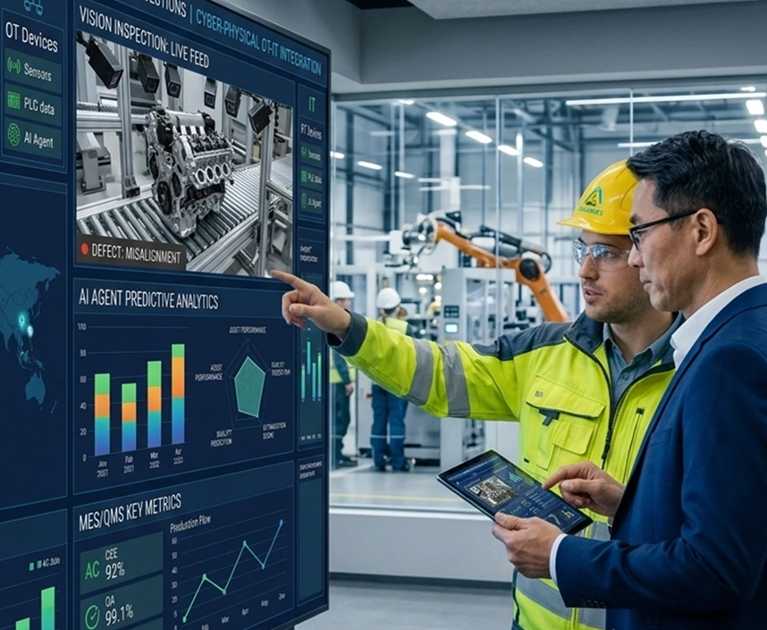
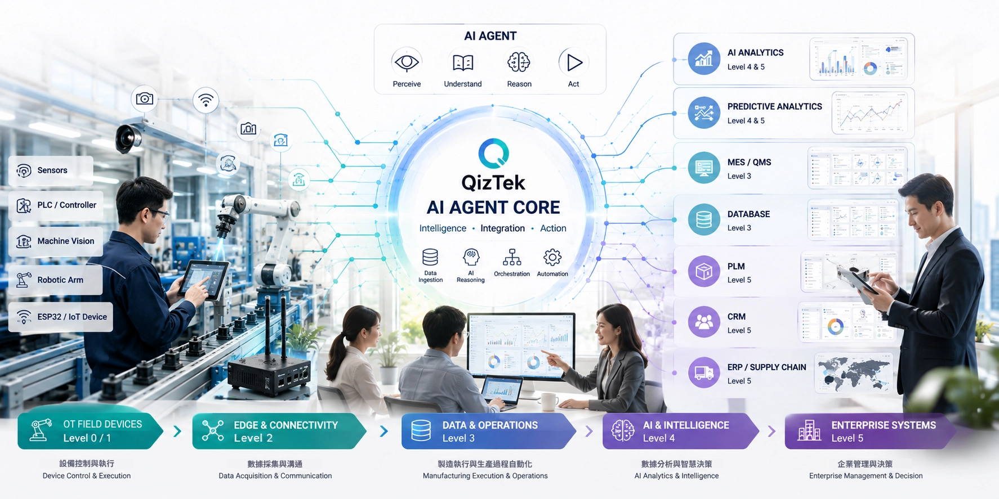

具體成效
全方位的數據整合與即時監控，優化作業流程、降低運營成本並提升整體可視性。

數據數位化
100%
消除紙本作業，數據即時同步至 QMS 與進銷存系統。
庫存成本降低
-35%
透過趨勢預測優化採購策略與物料流動效率。
製程透明度
+50%
實現跨層級數據串接、一鍵履歷溯源與即時監控。
四大核心解決方案
打通 OT 設備層至 IT 決策層的完整數位化架構

System Architecture & International Standard
IEC 62264 (ISA-95) 工業標準與 AI Agent 生態系
嚴格遵循國際主流規範，貫穿 OT 現場設備層（Level 0-2）至 Enterprise IT 決策層（Level 3-5），實現無縫且標準化的數據採集與 AI 智慧控制。